地政学
アスタナはロシア、中国、中央アジア、カスピ海を見渡す内陸国家の首都です。首都移転は北部統合と独立国家の象徴を兼ね、外交と安全保障が広い草原都市の日常へ重なります。均衡を測る都市です。外交の窓でもあります。
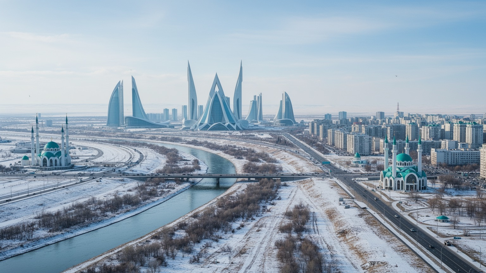
🇰🇿 カザフスタン共和国 / 首都 / World City Atlas
ユーラシア草原の中央に築かれた計画首都です。国家政治、資源経済、金融、建設、宗教共存、厳冬の暮らしが、広い大通りとイシム川の両岸に重なります。
都市の骨格
アスタナは、旧ソ連の地方都市と独立国家の新しい首都が重なった都市です。イシム川、官庁軸、大モスク、金融センター、住宅団地、寒風の大通りを見ると、国家建設の意志と日常の負担が同時に見えてきます。
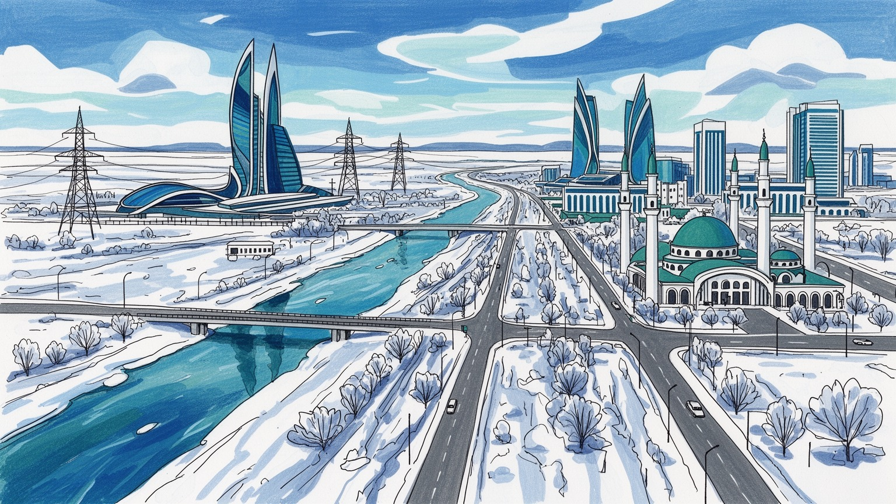
アスタナはロシア、中国、中央アジア、カスピ海を見渡す内陸国家の首都です。首都移転は北部統合と独立国家の象徴を兼ね、外交と安全保障が広い草原都市の日常へ重なります。均衡を測る都市です。外交の窓でもあります。
行政、建設、金融、教育、運輸、情報技術、国営企業関連の仕事が集まります。資源収入と公共投資が都市を伸ばす一方、家賃、寒冷地の光熱費、通勤、雇用が生活の課題です。分配も問われます。移住者の仕事も支えます。
カザフ語とロシア語、イスラム、正教会、世俗的な国家儀礼が共存します。大モスク、平和と和解の宮殿、博物館、劇場は、多民族国家の調停を見せる舞台です。遊牧の記憶も都市文化を支えます。祝祭も共有されます。
観光客はバイテレク、アクオルダ、大モスク、国立博物館、川辺を巡ります。住民は吹雪、渋滞、学校、屋内商業施設、夏の公園を使い分けます。壮大な景観の裏に、寒冷地の実用的な生活があります。日々の移動も重要です。
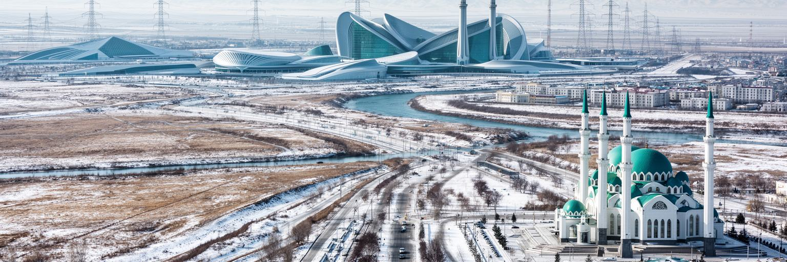
アスタナを理解する入口は、草原の広さと計画首都の人工性を同時に見ることです。街はイシム川の両岸に広がり、旧市街側には鉄道、ソ連期の街区、市場、古い住宅が残り、左岸には官庁、記念建築、金融センター、高層住宅が整然と並びます。首都移転は単なる行政機能の引っ越しではなく、独立後のカザフスタンが自分の国家像を空間で示す事業でした。北部の人口構成、ロシアとの長い国境、国内の地域均衡、広い国土を統合する必要が、首都の位置に重なっています。広い大通りと巨大な広場は国家の力を見せますが、冬の風を受ける歩行者には厳しい空間にもなります。計画都市としての美しさと、暮らしの身体感覚は必ずしも同じではありません。アスタナでは、建築の象徴性、行政の効率、住宅供給、公共交通、学校、公園、暖房インフラが一体で評価されます。草原の中に首都を築くことは、何もない場所へ未来を描く行為であると同時に、寒さ、距離、水、土壌、風という自然条件と長く交渉する仕事です。都市の壮大さは写真で伝わりやすいですが、本当の読みどころは、記念軸と日常動線がどれだけ重なるかにあります。国家の意志が生活の便利さへ変わる時、計画首都は初めて住民の都市になります。さらに旧市街の商店や駅前の混雑を歩くと、計画図だけでは見えない都市の時間も読めます。
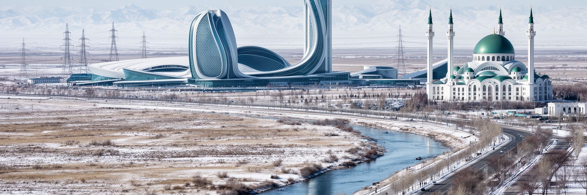
アスタナはカザフスタン政治の集中点です。大統領府アクオルダ、議会、政府庁舎、最高裁、各省庁、大使館、国営企業関連機関が近い距離に集まり、都市の中心軸は国家運営の舞台として設計されています。首都移転はアルマトイの地震リスクや地形的制約を避ける実務的判断でもありましたが、同時に新しい独立国家の権威を可視化する政治的選択でした。アスタナの建築は、未来志向、遊牧の象徴、国際性、多民族国家の調和を繰り返し表現します。けれども政治都市を読む時は、壮大な庁舎だけでなく、市民の参加、地方との距離、報道や議会の役割、行政サービスの質も見る必要があります。二〇二二年の政治的緊張や改革の議論は、首都が安定の象徴であるだけでなく、社会の不満を受け止める場でもあることを示しました。大通りの整然とした風景は国家の統制を感じさせますが、公共空間が住民の声をどの程度許すかは都市の成熟を測る重要な尺度です。アスタナは国際会議や外交行事を通じて、中央アジアの対話都市としても振る舞います。政治の重みは建物の高さではなく、寒い朝に役所へ向かう人、地方から陳情に来る人、学生が将来を語る場に現れます。首都は国家を代表しますが、その代表性は日々作り直されます。地方都市から見た距離感や、首都へ資源が集まることへの評価も、政治空間の一部です。
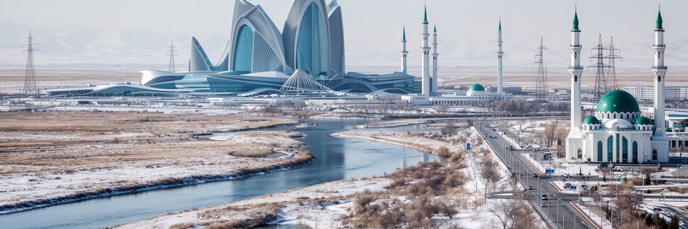
アスタナの経済は、石油やガスの採掘都市そのものではありませんが、資源国家の意思決定と資本配分を担う場所です。国営企業、政府系基金、鉄道、通信、エネルギー関連機関、建設会社、金融サービス、法律、会計、国際機関が集まり、国内の資源収入と公共投資が都市の雇用を支えます。アスタナ国際金融センターは、英語法系の制度や国際的な金融サービスを掲げ、中央アジアの投資拠点を目指しています。これは資源依存を和らげ、金融、テクノロジー、専門職を育てる試みでもあります。一方で、首都の成長が公共投資や不動産に強く依存すると、景気や財政の変動が住宅、雇用、地方格差に影響します。高層オフィスや新しいモールは近代化を示しますが、清掃、警備、建設、配送、飲食で働く人の賃金と生活費の差も都市の現実です。アスタナでは、資源の富をどのように教育、医療、交通、研究、起業へ回すかが問われます。金融センターの成功は、登録企業数だけでなく、国内の中小企業、若い専門職、地域経済へどれだけ実利を返せるかで評価されます。草原の首都が資源国家の会計台帳で終わらず、知識とサービスの都市へ変われるかどうかは、教育の質、透明な制度、国際的な信頼にかかっています。経済の強さはビルの輝きより、働く人が将来を描ける条件に表れます。公共調達や国営企業の透明性も、都市経済への信頼を左右します。
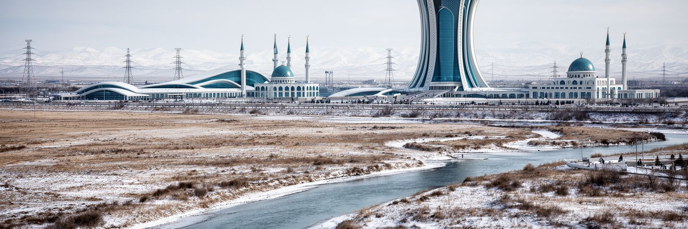
アスタナの都市景観は、象徴建築の連続として強く記憶されます。バイテレクは生命の樹と未来を表し、ハンシャティールは遊牧の天幕を巨大な商業空間へ置き換え、平和と和解の宮殿は宗教対話と国家の調停を示します。大モスク、国立博物館、コンサートホール、橋、官庁街、高層住宅は、独立後の国家が自分の物語を建築で語ろうとした結果です。こうした景観は観光客には印象的で、都市のブランドを作りますが、住民にとっては風、距離、日陰、歩道、バス停、店舗、学校への動線が同じくらい重要です。大きな建築が点として並ぶだけでは、歩いて楽しい街にはなりません。厳しい冬と強い風の中では、建物の間の空間が生活の質を左右します。アスタナの課題は、記念性の高い建築群を、細かな街路、近隣商店、公園、公共交通、低層の居場所と結び直すことです。象徴建築は国家の自信を見せますが、都市の深さは日常の場所がどれだけ多様かで決まります。夜景や式典の光だけでなく、昼の買い物、子どもの帰宅、雪かき、待ち合わせ、屋内通路の使われ方を見ると、建築が生活へ馴染んでいるかが分かります。アスタナの景観はまだ完成形ではなく、記念碑的な骨格に人の時間を入れていく途中の都市です。空間の壮大さを生活の密度へ変えられるかが、これからの評価を左右します。小さな店や市場の温度が加わるほど、記念建築の街は生活都市へ近づきます。
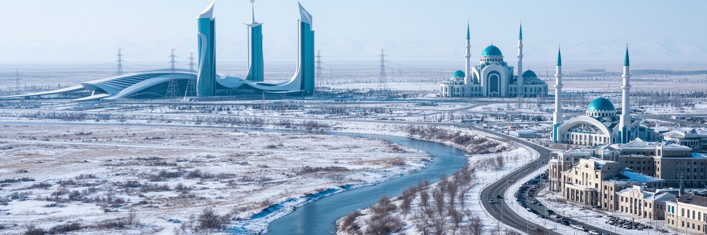
アスタナは世界の首都の中でも寒さが厳しい都市です。冬には強い風、吹雪、凍結、長い暖房季が続き、外を歩く時間、通勤、学校、建設、道路管理、医療、家計に大きな影響を与えます。寒冷気候は観光の話題になるだけではなく、都市の設計を根本から左右します。バス停に風除けがあるか、歩道の雪がすぐ除かれるか、建物の断熱が十分か、暖房網が安定しているか、停電や熱供給のトラブルに備えがあるかは、住民の日常を直接決めます。夏は乾いて暑く、日差しと風が強いため、街路樹、日陰、水辺、公園も重要です。広い大通りは式典や車の流れには向きますが、冬の歩行者には距離と風の負担になります。寒冷地の首都としてアスタナを評価するには、壮大な景観よりも細かなインフラを見る必要があります。屋内商業施設や地下通路、学校への送迎、暖房費、除雪車の動き、救急の到着時間は、都市の安全を測る指標です。気候変動によって寒暖差や降水の不安定さが増えれば、排水、道路舗装、建物の耐久性も問われます。アスタナの寒さは弱点であると同時に、都市管理を鍛える条件でもあります。厳しい季節の中で、誰もが移動し、学び、働ける仕組みを作れるかが、計画首都の実用性を証明します。冬に弱い住宅や交通は、所得の低い世帯ほど負担を重くするため、気候対策は福祉政策でもあります。
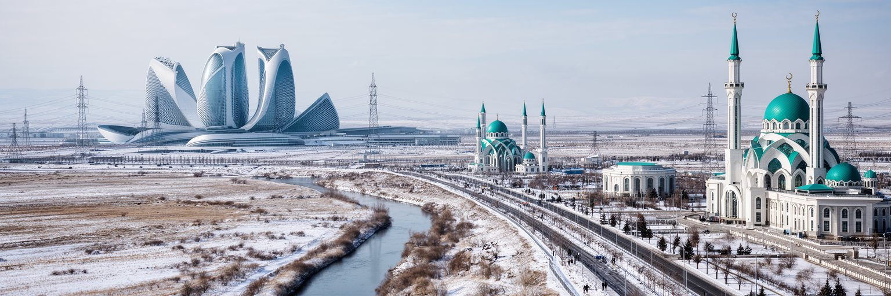
アスタナの宗教と文化は、多民族国家カザフスタンの自己像を映します。カザフ人のイスラム、ロシア系住民の正教会、世俗的な国家儀礼、ソ連期の記憶、独立後のカザフ語復興が同じ都市で重なります。大モスクは新しい首都の宗教的な存在感を示し、正教会は北部草原都市の歴史を伝え、平和と和解の宮殿は宗教対話を国家ブランドとして表現します。アスタナの多文化性は、民族衣装や祝祭の展示だけではありません。学校で使う言語、役所の手続き、職場の会話、家族の移動、メディア、食卓、結婚式に現れます。カザフ語の公的な位置が強まる一方、ロシア語は日常とビジネスで広く使われ、若い世代は英語やトルコ語、中国語にも触れます。多民族共存は安定の象徴として語られますが、言語、歴史認識、地域格差、移民、宗教保守化をめぐる緊張もあります。首都はそれらを隠すのではなく、制度と公共空間で調停する役割を持ちます。宗教施設を巡ると、信仰が建築の飾りではなく、家族行事、葬送、慈善、食の慣習、共同体の記憶と結びついていることが分かります。アスタナの文化的な重みは、中央アジアの遊牧的な記憶、ソ連都市の経験、独立国家の言語政策を同時に扱う点にあります。共存は完成した標語ではなく、毎日の言葉づかいと制度の公平さで保たれます。博物館や劇場がその複数の記憶をどう展示するかも、首都の文化政治を映します。
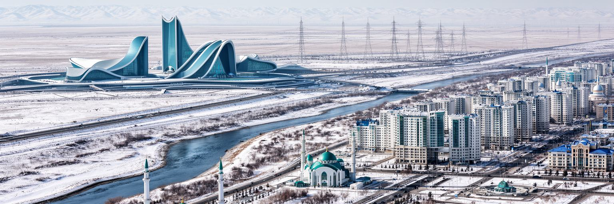
アスタナは首都移転後に人口が急増し、住宅地、学校、病院、商業施設、道路が次々に作られてきました。地方からの移住、行政職、建設業、学生、専門職、若い家族が集まり、都市は短い時間で大きくなりました。新しい高層住宅や郊外の団地は近代的に見えますが、家賃や住宅価格、通勤時間、保育園の不足、冬の暖房費、建物の品質は住民にとって切実です。旧市街側には古い住宅、市場、低層の街区が残り、左岸の記念的な新市街とは違う生活の密度があります。成長する首都では、住宅が単なる不動産商品になりやすく、投資目的の建設が生活圏の質を追い越すことがあります。学校や診療所、近隣商店、歩いて行ける公園、風を避けられる歩道がなければ、住まいの数が増えても暮らしは安定しません。アスタナの住宅問題は、人口統計の増加だけでなく、誰が中心部に近く住めるか、低所得世帯や若い世帯が将来を描けるかという社会問題です。建設は雇用を生み、都市に活力を与えますが、品質管理、断熱、耐久性、公共交通との接続を伴わなければ、後で大きな負担になります。住民の日常は、壮大な官庁街よりも、エレベーター、暖房、駐車、雪道、学校までの距離で測られます。成長の速度を生活の質へ変えることが、アスタナの次の都市政策です。住宅地の一階に店や診療所が入るかどうかも、冬の暮らしやすさを大きく変えます。
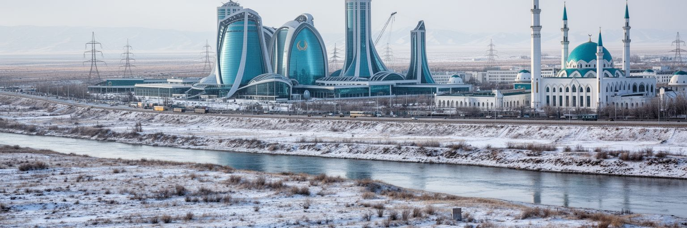
アスタナの交通は、首都の内部移動とユーラシア内陸の広域回廊を同時に担います。鉄道はカザフスタン各地とロシア方面を結び、空港は国内線、国際線、政府関係者、ビジネス客、留学生の移動を支えます。道路は広く整備されていますが、人口増加と住宅地の拡大により、朝夕の渋滞や郊外通勤が課題になっています。内陸国にとって交通は港の代わりになる生命線です。中国、ロシア、中央アジア、カスピ海、欧州を結ぶ物流構想の中で、アスタナは政治的な調整とサービスの拠点になります。ただし、広域回廊の図面だけでは住民の移動は改善しません。バスの頻度、乗り換え、寒い停留所、歩道の除雪、自転車の安全、学校や病院へのアクセスが、毎日の都市を形づくります。広い大通りは車に便利ですが、歩行者には横断距離が長く、冬の風を受けやすいです。公共交通が信頼されれば、住宅地の選択肢が広がり、渋滞や大気汚染も抑えられます。アスタナの交通政策は、首都の見栄えよりも、地方から来た人、高齢者、子ども、車を持たない若者が安全に移動できるかを基準にする必要があります。国際空港と鉄道駅が国家の玄関であるなら、近所のバス停は住民の玄関です。両方をつなぐ細かな設計が、内陸首都の実用性を決めます。雪の日にも遅れにくい運行管理があって初めて、公共交通は信頼されます。
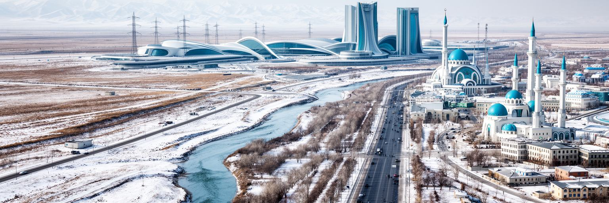
アスタナは若い人口を引き寄せる教育と文化の都市でもあります。大学、研究機関、国立博物館、劇場、コンサートホール、図書館、IT教育、国際学校が集まり、地方から来る学生や専門職に新しい選択肢を与えます。ナザルバエフ大学のような英語教育を掲げる機関は、資源国家から知識経済へ移る象徴として扱われます。文化面では、国立の舞台芸術、現代建築、遊牧文化の展示、映画、音楽、カフェ、ショッピングモールの余暇が混ざります。若い首都であるため、都市の伝統は古い路地だけでなく、移住してきた人々が作る新しい習慣から生まれます。一方で、若者にとってアスタナは機会の都市であると同時に、家賃、就職、言語、寒さ、家族からの距離が負担になる都市でもあります。高等教育を受けた人材が行政や金融に集中しすぎれば、創造産業や地域社会の厚みは育ちにくくなります。図書館、手頃な練習室、小さなライブ会場、学生向け住宅、夜でも安全な公共交通は、知識都市の基礎です。国家が用意した文化施設だけではなく、市民が自分で企画し、集まり、議論できる場所が増えるほど、都市は柔らかくなります。アスタナの若さは、未完成という弱さでもあり、作り直せる余地でもあります。教育と文化が官庁街の飾りで終わらず、学生や働く若者の日常を支える時、首都は次の世代の都市になります。
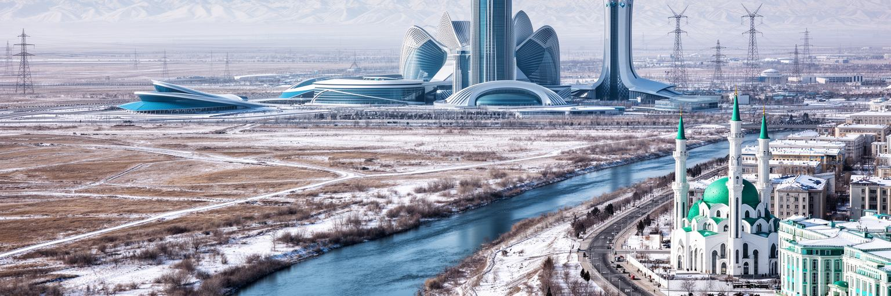
アスタナ観光は、国家の自己紹介に近い性格を持ちます。旅行者はバイテレクの展望台から新市街を眺め、アクオルダや官庁街の軸線を見て、大モスク、国立博物館、平和と和解の宮殿、ハンシャティール、イシム川沿いを巡ります。これらの場所は、カザフスタンが独立後にどのような国として見られたいかを集中的に示します。草原、遊牧、資源、近代化、多民族共存、国際会議都市という要素が、短い観光動線の中に配置されています。一方で、観光の魅力は記念建築だけでは十分ではありません。旧市街の市場、普通の食堂、住宅地の冬の暮らし、川辺の散歩、郊外へ向かう道を見ると、都市の厚みが増します。アスタナはアルマトイのような山の自然や歴史的な街路の密度とは違い、計画首都としての意志を見せる都市です。そのため観光客には、完成した景観を消費するだけでなく、国家が未来像をどのように組み立てているかを読む視点が向いています。冬に訪れれば寒さと風が都市の設計を理解させ、夏に訪れれば公園、川、広場の使われ方が見えます。ホテルや会議場が増えるほど、観光はビジネス、外交、文化イベントと結びます。持続的な観光には、歩行者の快適さ、公共交通、案内、地元の小商い、住民生活への配慮が欠かせません。観光の舞台を国家だけでなく市民へ開くことが、首都の魅力を深めます。
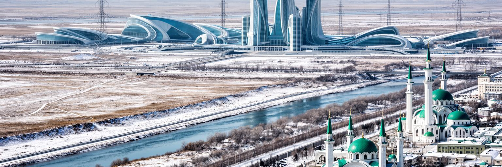
アスタナを読むことは、国家が描く未来像と、住民が毎日使う都市を重ねることです。首都移転はカザフスタンの独立、領土統合、北部の安定、国際的な存在感を示す大事業でした。左岸の官庁街、バイテレク、大モスク、金融センター、広い大通りは、その意志を分かりやすく見せます。しかし都市の価値は象徴だけでは決まりません。冬の通勤、暖房費、住宅価格、学校、公共交通、言語、若者の仕事、移住者の居場所、川辺の公園が、首都の本当の使いやすさを測ります。アスタナは古い歴史都市ではなく、短い時間で作られた国家プロジェクトです。その若さは、時に人工的で空白の多い景観を生みますが、同時に制度、交通、住宅、文化を作り直せる余地も残します。資源国家の富を金融や教育へ変えられるか、多民族社会の共存を日常の公平さへ落とし込めるか、寒冷な草原の条件を人にやさしい都市設計へ変えられるかが、これからの焦点です。観光客は記念建築を巡るだけでなく、旧市街の市場、住宅地、バス停、川辺、大学、冬の歩道にも目を向けたいです。そこに、国家の舞台としてのアスタナと、生活都市としてのアスタナの距離が見えます。その距離を縮める努力こそ、この首都の成熟を示します。壮大な都市を丁寧に歩くと、中央アジアの現在が具体的に見えてきます。川辺の緑地も生活の余白になります。